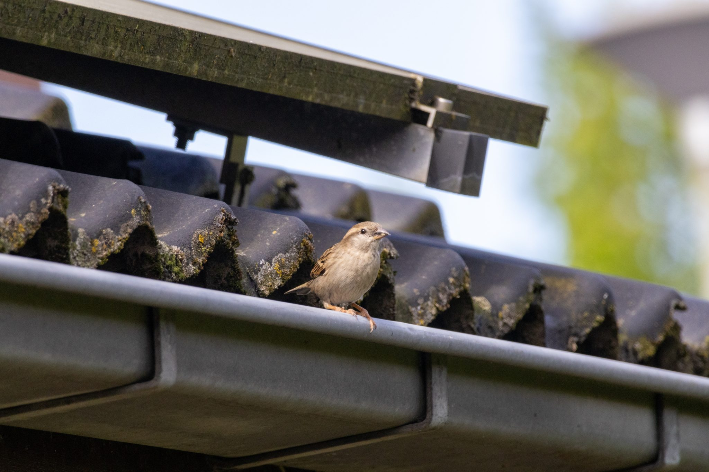
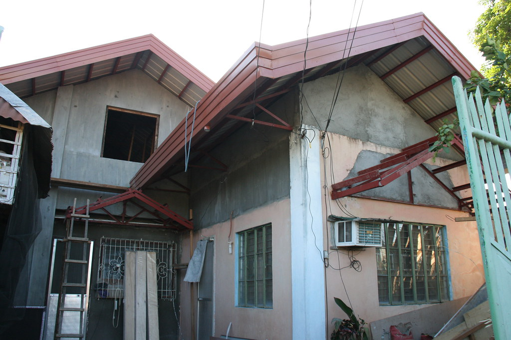
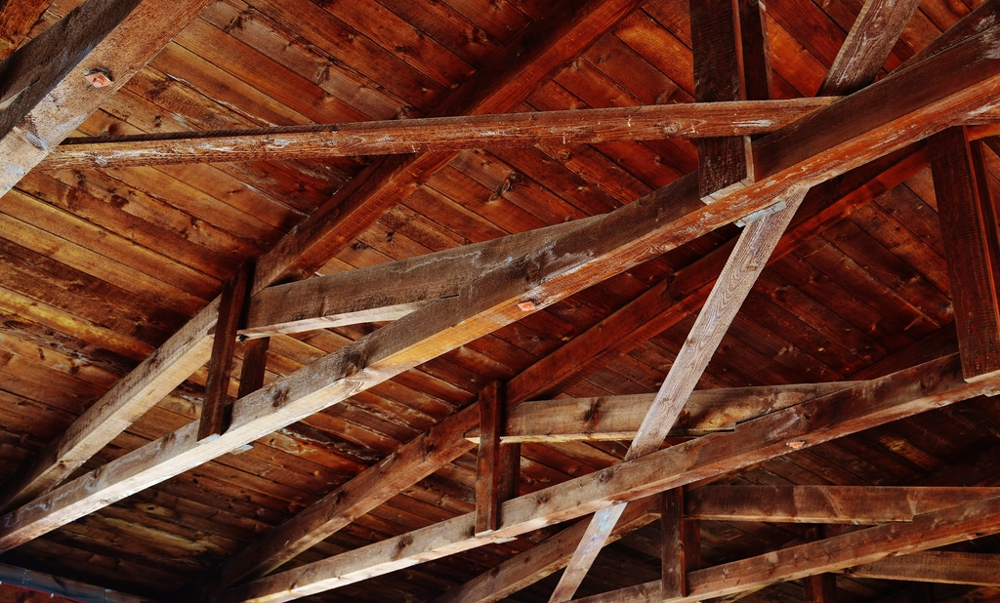
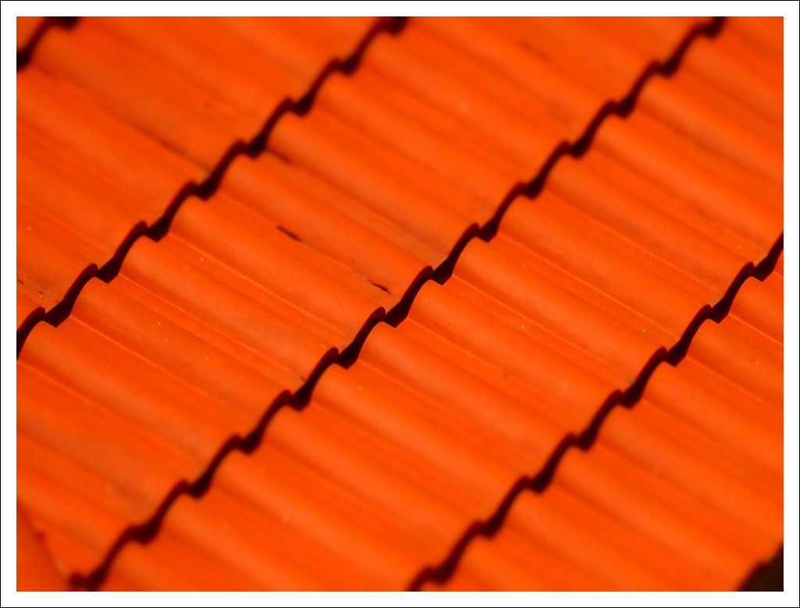
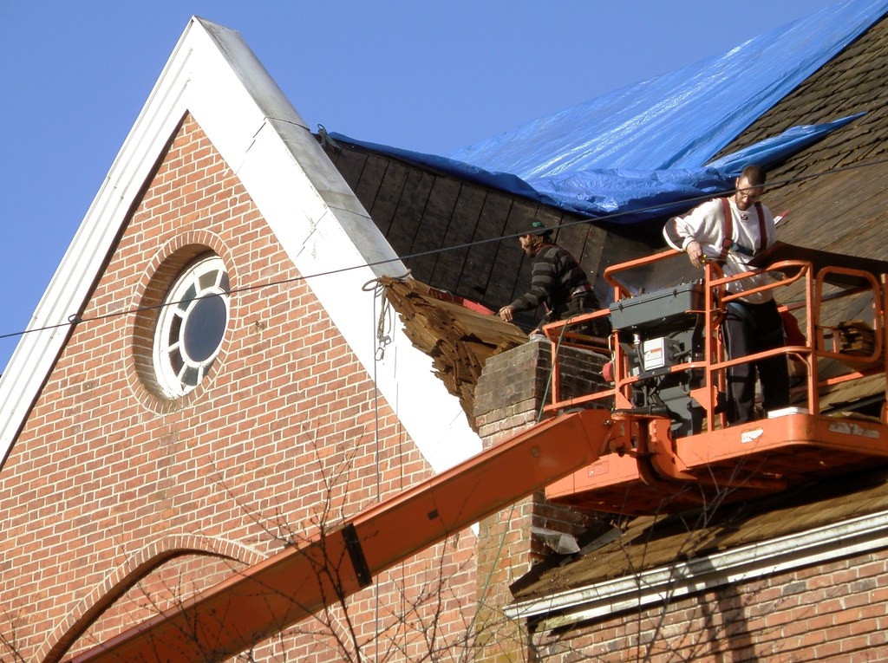

Zinguerie et gouttières au Creusot
Une gouttière qui déborde finit par abîmer façade et fondations. Nous posons et remplaçons l'ensemble des ouvrages qui évacuent l'eau du toit.

Nos prestations
- Gouttières et chéneauxZinc, aluminium ou PVC, demi-rondes ou carrées, pose neuve et remplacement.
- Descentes d'eau pluvialeRaccordement, dauphins, remplacement des descentes abîmées.
- Noues, solins et abergementsÉtanchéité autour des cheminées, des fenêtres de toit et des jonctions de pans.
- Habillages de rives et bandeauxProtection des bois de rive et des débords de toit.
- Nettoyage et entretienDébouchage et remise en état des gouttières.
Le zinc, un travail de précision
La zinguerie se joue au détail : pentes d'écoulement, soudures, dilatation du métal. Un ouvrage bien posé évite les infiltrations aux points sensibles du toit, là où se produisent la plupart des fuites.

Questions fréquentes
Zinc, alu ou PVC : que choisir ?
Le zinc est durable et esthétique, l'aluminium léger et sans entretien, le PVC le plus économique. Nous vous conseillons selon votre maison et votre budget.
À quelle fréquence nettoyer ses gouttières ?
Au moins une fois par an, après la chute des feuilles, et plus souvent si des arbres sont proches de la maison.
Nos autres métiers

Voir les prestationsCharpente
Fabrication et pose de charpentes bois, traditionnelles ou industrielles, modification et surélévation.

Voir les prestationsCouverture
Toitures en tuile, ardoise, zinc ou bac acier : réfection complète, réparation de fuites, démoussage.

Voir les prestationsIsolation
Isolation de toiture, aménagement de combles, bardage extérieur pour réduire les pertes de chaleur.
Un projet de toiture ?
Nous nous déplaçons pour voir votre toit et vous remettons un devis gratuit.